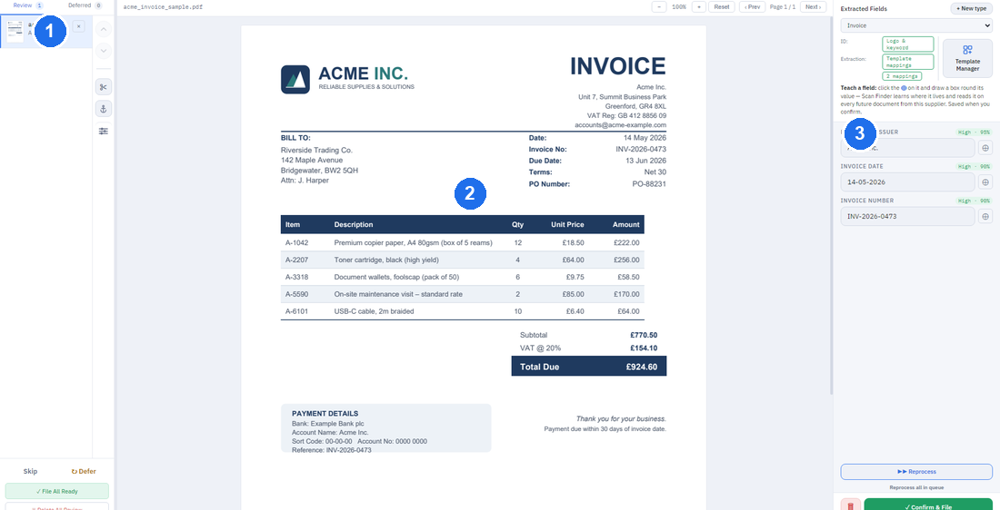

Use this page when the number beside Review is not zero.
Check what it wasn't sure about
Review is the list of documents Scan Finder wants you to glance at before they're filed. Everything it read cleanly is already marked Ready to file; the rest are here because one detail was faint, missing, or unlike what it's seen before.
The five areas
- The waiting list (left) — one row per document, grouped by sender with the newest on top. Beside a sender's name a badge may say “N more to file by itself” — how close that sender is to needing no checks at all.
- The document (middle) — the scan itself. Scroll to zoom, right-click and drag to move. A small toolbar above it turns pages and straightens a crooked scan.
- The details (right) — what it read: the company, date, reference and any other details. This is where you fix things.
- The tool rail (far side) — buttons for the whole document: split a PDF, clean up a hard-to-read scan, straighten every page, and the advanced Template Wizard.
- The activity strip — a line of recent filings across the top, if you've turned it on in Settings.

Checking a document
Each held document carries a short note saying why it's here — for example “the date was hard to read” or “a new company”. Work through it:
- Look at the note and the detail it points to.
- Fix anything wrong — click the detail and type over it, or draw a box round the right value. See Fixing a detail.
- Confirm & File files the one you're looking at (keyboard: Ctrl+Enter).
If a document is fine as it stands and you just want it out of the list, press Space to Mark Reviewed. Not ready to decide? Defer puts it aside for later.
Doing several at once
- File All Ready files only the rows marked Ready and leaves the rest waiting — a safe one-click way to clear the easy ones.
- Delete sends a document to the recycle bin; you can restore it from Search.
- Reprocess reads a document again — useful after you've taught its sender or straightened it. You can reprocess one sender's documents or all of them.
When a scan reads badly
A crooked or faint scan is the usual reason a document lands here.
- Straighten (the toolbar above the page, or the ∞ on the tool rail for every page) squares up a skewed scan so the details line up.
- Clean up a hard-to-read scan (tool rail) re-reads a faint or noisy page more carefully.
- Still unreadable? Re-scan that one page — a good scan beats any amount of cleanup.
If your copy has printing turned on, a Print button opens your printer's own dialog. Every print is recorded in the audit log.